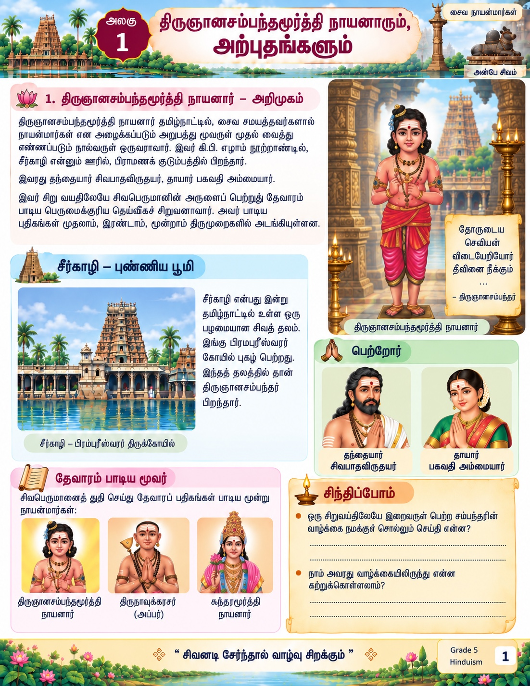
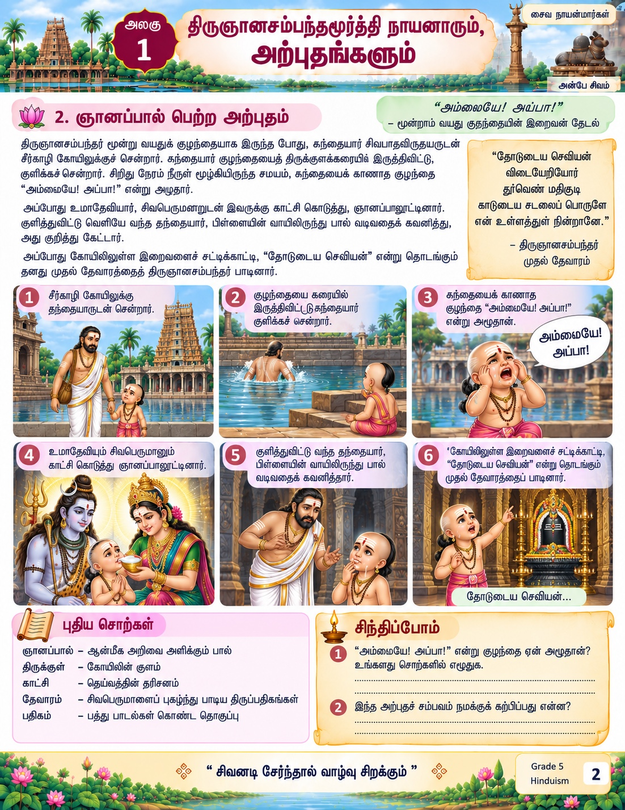
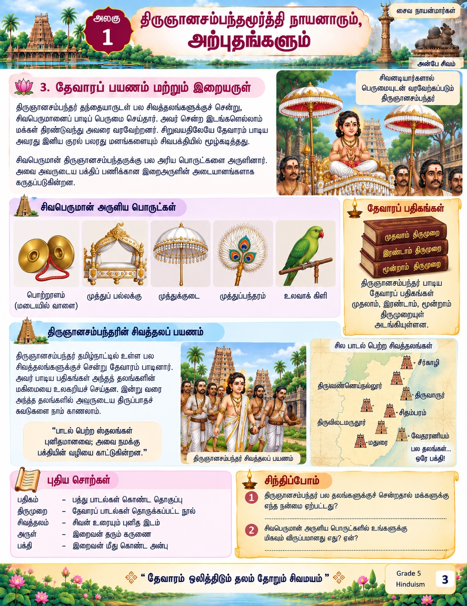
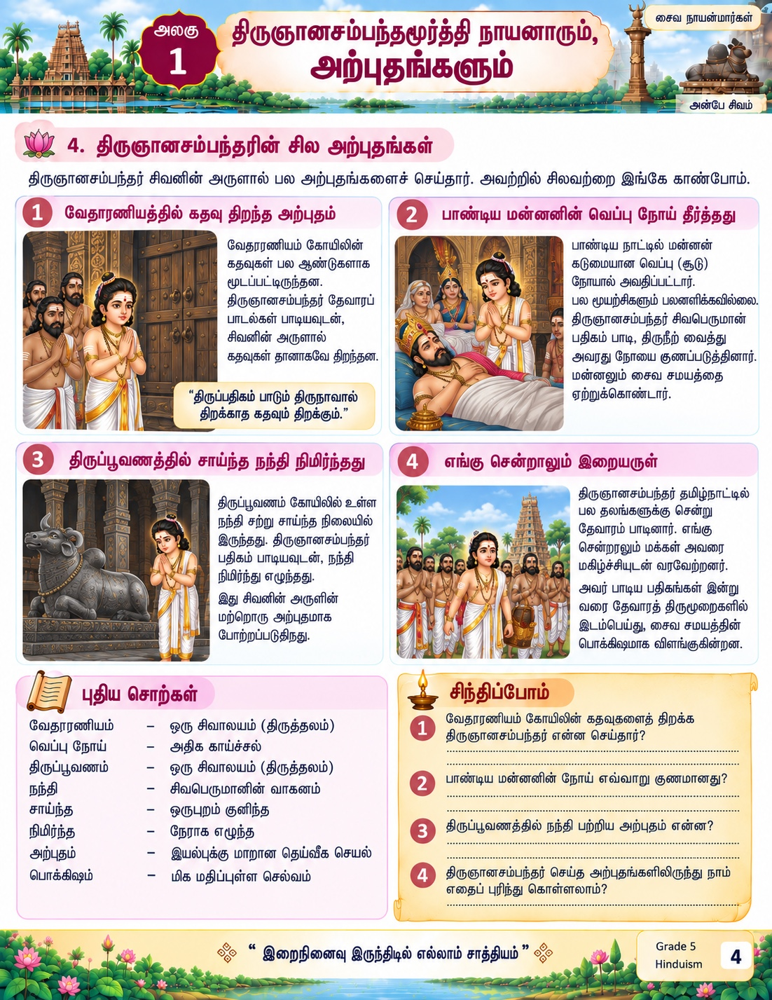

📚 துணைக் கற்றல் பக்கங்கள்
முதலில் பாடத்தின் படங்களுடன் கூடிய துணைப் பக்கங்களைப் பார்ப்போம். பிறகு வாசிப்பு மற்றும் இணையப் பயிற்சிகளைச் செய்வோம்.




🔊 கேட்டு வாசிப்போம்
முதலில் நீயே வாசிக்க முயற்சி செய். பிறகு “கேள்” என்பதை அழுத்தி, சொற்களைப் பார்த்துக்கொண்டே கேள்.
குறிப்பு: இந்த prototype உலாவியின் Tamil text-to-speech குரலைப் பயன்படுத்துகிறது. இறுதி பதிப்பில் ஆசிரியர் பதிவு செய்த ஒலியையும் இணைக்கலாம்.
🗣️ வாசித்துப் பழகுவோம்
1. முதலில் கேள் → 2. கேட்டுக்கொண்டே வாசி → 3. ஒலியை நிறுத்தி நீயே வாசி → 4. கடினமான சொற்களை மீண்டும் முயற்சி செய்.
நீ passage-ஐ இரண்டு முறை வாசித்தாயா?
🔤 சொற்களை அறிவோம்
“தேவாரம்” என்பதற்கு சரியான விளக்கம் எது?
🧠 படித்துப் புரிந்துகொள்வோம்
திருஞானசம்பந்தர் எங்கு பிறந்தார்?
இவரது தந்தையார் யார்?
🎮 நிகழ்வுகளை நினைவுகூர்வோம்
ஞானப்பால் பெற்ற அற்புதத்தில் நடந்தவற்றை நினைவில் கொண்டு சரியான பதிலைத் தேர்ந்தெடு.
குளக்கரையில் குழந்தை அழுதபோது என்ன நடந்தது?
🏆 அலகுச் சவால்
திருஞானசம்பந்தர் பாடிய தேவாரப் பதிகங்கள் எந்த திருமுறைகளில் அடங்கியுள்ளன?